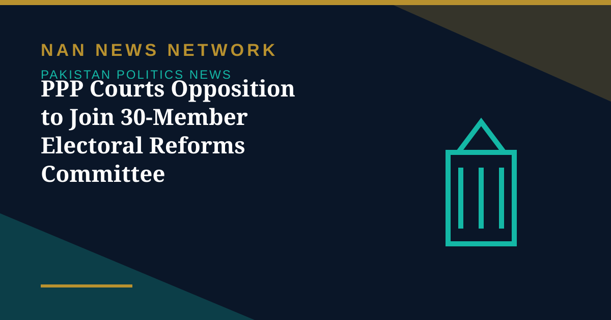

PPP Courts Opposition to Join 30-Member Electoral Reforms Committee

The Pakistan Peoples Party intensified its efforts on Friday to secure opposition participation in the proposed parliamentary committee on electoral reforms, as a party delegation met Senate Opposition Leader Allama Raja Nasir Abbas to urge him to join the initiative, The Express Tribune reported on October 31.
A 30-member committee, awaiting notification
The National Assembly has approved the formation of a 30-member parliamentary committee to oversee electoral reforms, comprising 20 members from the lower house and 10 from the Senate, with seats allocated to parliamentary parties in proportion to their numerical strength. Federal Minister for Parliamentary Affairs Dr Tariq Fazal Chaudhry said the Speaker would soon issue a formal notification constituting the committee, while the process of finalising members' names was still under way. He added that the PTI had not opposed the motion when it was presented in the National Assembly.
Opposition seeks time to consult
The PPP delegation comprised Secretary General Nayyar Bokhari, Senator Waqar Mehdi, Nadeem Afzal Chan and Senator Sherry Rehman. Senator Rehman said Abbas had sought time to consult before conveying his response, adding that the party was hopeful of a positive outcome. Dawn reported that the PPP also urged opposition lawmakers to end their boycott and rejoin parliamentary standing committees, which they had quit in August 2025, and to engage with Prime Minister Shehbaz Sharif over the appointment of a new chief election commissioner. PTI Chairman Barrister Gohar Ali Khan has demanded equal representation for government and opposition on the committee, and the opposition is expected to give a formal response after internal consultations.
Sources: Express Tribune, Dawn, The Nation, October 31, 2026
More on Pakistan Politics News
- National Assembly Unanimously Passes Workplace Harassment Resolution as Parliament Is Prorogued
- National Assembly Passes Four Government Amendment Bills by Majority Vote
- Opposition Signals Willingness to Join Electoral Reforms Committee After PPP Outreach
- National Assembly Session Suspended After Speaker Finds House Lacks Quorum
- Pakistan Proposes Parliamentary Friendship Group With Turkmenistan
- Lahore High Court Judge Mohsin Akhtar Kayani Resigns, Citing Executive Grip on Judiciary
- Pakistan Says Afghan Firing Kills One in South Waziristan Border District
- Pakistan Marks Kashmir Black Day With Rallies Across the Country
- National Assembly Passes Seven Private Members' Bills, Sends Six to Committees
- Pakistan Strongly Condemns Houthi Missile Attacks Near Makkah and Madinah
- Pakistan, Saudi Arabia and Turkiye Reported to Hold Tehran Talks on De-escalation
- Pakistan LPG Shortage Worsens as Iran Border Crossings Close
- Pakistan Ends Machine-Readable Passports and Switches Fully to E-Passports
- Pakistan Calls for a Fairer Global Order at the United Nations